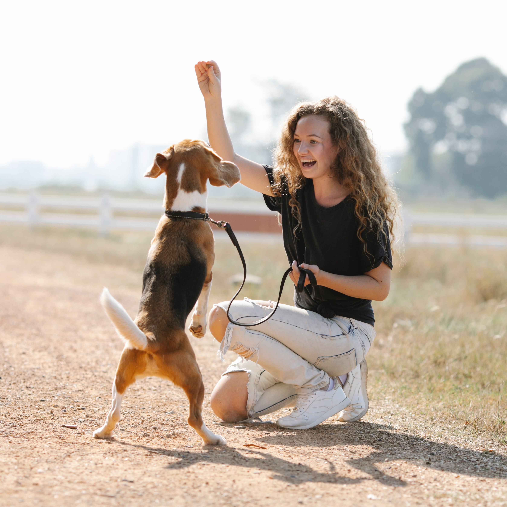
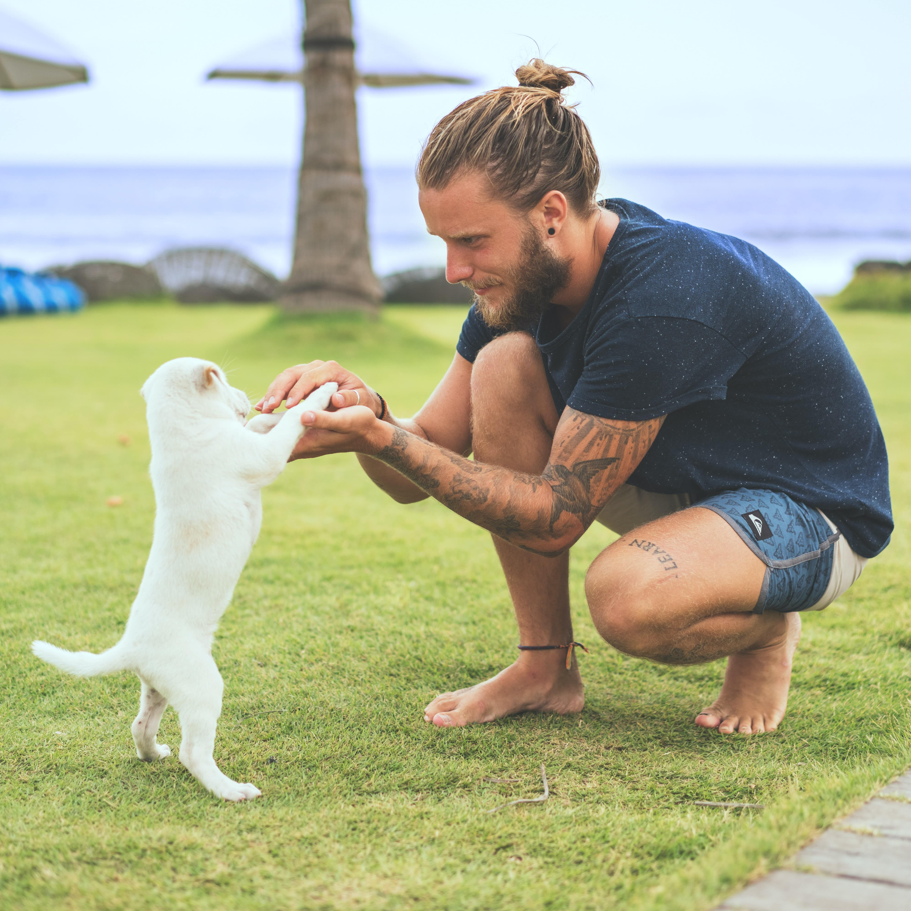

Meet the Team




Welcome to Tails of Valhalla, where we embark on epic adventures with your furry companions! Inspired by Norse mythology, we are a professional and dedicated team of dog walkers and trainers who are passionate about providing top-notch care and training services.
We believe in helping dogs lead happy, healthy, and well-behaved lives through regular exercise and balanced training techniques rooted in the power of positive reinforcement. Just as the Norse warriors relied on strength, honor, and loyalty, we uphold these values in our interactions with your canine companions.
When it comes to dog walking, our experienced team is committed to providing invigorating journeys for your furry warriors. We tailor each walk to suit your dog's breed, age, and energy level, whether it's a spirited exploration through lush forests or a brisk trot along rugged coastal paths. We are trained to handle dogs of all sizes and temperaments, ensuring a safe and thrilling experience for your beloved four-legged adventurers.
In addition, we offer comprehensive training services to tame the wildest of behaviors and shape your dog into a true Norse champion worthy of entering the halls of Valhalla. Whether it's mastering basic obedience commands or conquering more complex challenges, our team is equipped with the knowledge and skills to guide your dog towards victory.
At Tails of Valhalla, the safety and well-being of your four-legged warriors are of utmost importance to us. Our team is fully insured and trained in pet first aid and CPR, ready to face any unexpected battles that may arise. We conduct thorough consultations to understand your dog's unique needs and tailor our services to ensure a harmonious and prosperous journey.
Choose Tails of Valhalla for professional, reliable, and fearless care for your beloved canine warriors. Together, let us honor their heritage and guide them on a journey that will make them worthy of entering the halls of Valhalla.
At Tails of Valhalla, our individual dog walking service offers 1-2-1, personalized care and attention to each furry client. Our dedicated team of professionals create a positive and nurturing environment, prioritising the well-being and happiness of our four-legged friends. With tailored routines and a strong focus on building trust, we provide a reliable and enriching experience for both pets and their owners.
Book from £15.00 per session
At Tails of Valhalla, we believe that every dog deserves a legendary adventure, and our walks are designed to ignite their inner Viking spirit. From exploring majestic forests to conquering scenic trails, we embark on epic journeys tailored to each dog's unique needs and energy levels. Safety is of utmost importance and we ensure that all dogs are securely leashed and closely supervised. With our group dog walking service, dogs have the opportunity to forge strong bonds with fellow canine companions, forming a pack reminiscent of Valhalla's fearless warriors. We provide regular updates and captivating photos, allowing owners to join the quest from afar.
Book from £10.00 per session
At Tails of Valhalla, we specialise in providing highly personalised dog behaviour training services tailored to address specific behavioural challenges. Our experienced trainers are skilled in addressing a wide range of behaviour issues to create a harmonious living environment for you and your furry companion. Whether your dog battles with excessive barking, separation anxiety, aggression, or jumping on guests, our personalised training programmes are designed to confront these behaviours head-on. Through a blend of positive reinforcement and other balanced training techniques, we empower your dog to develop desirable behaviours, such as calm greetings and appropriate social interactions. As well as these examples, we possess the prowess to help you tackle any and all behavioural challenges you may be facing, no matter how daunting they may seem. Our dedicated team is here to support you and your faithful companion on the journey to a happier, well-behaved partnership. At Tails of Valhalla, you can trust that our personalised approach will bring about positive transformations and a deeper understanding between you and your beloved canine companion.
Book: £50.00 per hour
At Tails of Valhalla, we offer a unique and captivating loose lead walking training experience. Our skilled trainers are dedicated to helping your beloved furry companions become masters of loose lead walking. We teach your dogs to walk with poise and grace, free from the chaos of pulling and tugging. Through our specialised programme, we forge a strong bond between you and your furry companion, creating a harmonious partnership. Join us at Tails of Valhalla and embark on an epic journey where you and your four-legged friend will conquer the trails together, united in strength and purpose.
Book from £20.00 per session
At Tails of Valhalla, we offer a unique dog recall training program called "Odin's Call." Our program aims to cultivate an unbreakable bond between you and your furry companion. We empower your dog with unwavering loyalty and responsiveness when called. Join us at Tails of Valhalla, where we unleash the full potential of your dog's recall abilities, embarking on a harmonious and adventurous journey together.
Book from £20.00 per session
At Tails of Valhalla, we provide top-notch obedience training services for your furry companions. Our dedicated team of experienced trainers understands the importance of a well-behaved and obedient dog. We are committed to helping you forge a harmonious bond with your four-legged friend. Through our expert guidance, we instil essential skills and commands in your dog, ensuring their safety, happiness, and seamless integration into your family and community. Tailoring our training programmes to the unique needs and temperament of each dog, we foster confidence, discipline, and a strong connection between you and your loyal canine companion. At Tails of Valhalla, expect nothing less than professional and compassionate training services that will transform your dog into a well-mannered and obedient member of the pack.
Book from £15.00 per session